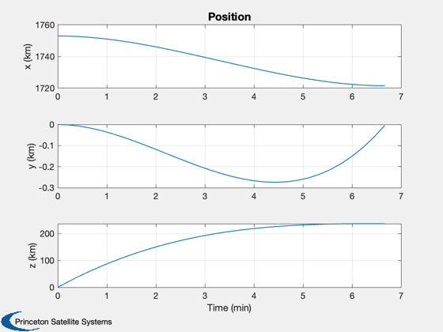
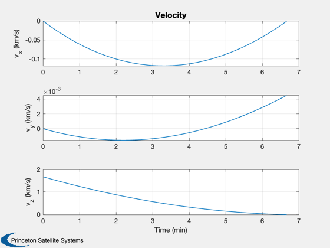
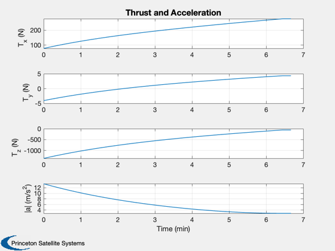
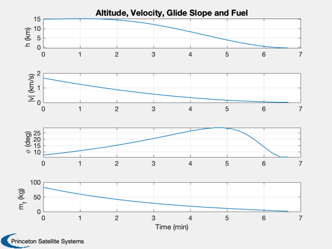

Least Squares Optimization
This demonstrates a least squares solution for lunar landing in 3D. The solution is in the moon fixed frame.
See also RHSPlanet3D, LunarLandingTargetState, OrbitStateMatrices, FuelMassFromAccel, RK4, GlideSlope, TimeLabl
Contents
%-------------------------------------------------------------------------- % Copyright (c) 2014-2016 Princeton Satellite Systems, Inc. % All rights reserved. %-------------------------------------------------------------------------- % Since 2016.1 %--------------------------------------------------------------------------
Constants
muMoon = 4904.8695; % km^3/sec^2 rMoon = 1738; % km
User inputs
n = 30; % Number of steps h = 15; % Initial altitude (km) m0 = 100; % Dry mass (kg) thrustMax = 450; % N uGS = [0;0;-1]; tMax = 400; uE = 310*9.806; % Define the landing point lat = 8*pi/180; % rad lon = 0; % rad alt = 0; % km
Set up the optimization
r = rMoon + h; d = RHSPlanet3D; % Iterate to find the mass of the fuel and maneuver duration % The mass of fuel will be updated for the nonlinear simulation % based on the optimization results mF = 0; for k = 1:10 dV = thrustMax*tMax/(m0+mF); mF = m0*(exp(dV/uE) - 1); end u = sqrt(muMoon/r); % Orbital velocity g = muMoon/rMoon^2; % Gravity at the lunar surface d = RHSPlanet3D; d.n = n; % Number of steps d.m0 = m0; % Dry mass % Specify the target xTarget = LunarLandingTargetState( lat, lon, alt ); fprintf(1,'Target latitude %8.2f deg\n',lat*180/pi); fprintf(1,'Target longitude %8.2f deg\n',lon*180/pi); fprintf(1,'Target altitude %8.2f deg\n', alt); fprintf(1,'Maneuver time %8.2f sec\n',tMax); fprintf(1,'Mass dry %8.2f kg\n',m0); fprintf(1,'Mass fuel %8.2f kg\n',mF); fprintf(1,'Velocity change %8.2f m/s\n',dV); fprintf(1,'Maximum thrust %8.2f N\n\n',thrustMax); d.thrustMax = thrustMax; x0 = [r;0;0;0;0;u;mF]; % Initial state vector dT = tMax/n; % This sets the linearized equations to use a constant gravity x = zeros(6,n); for k = 1:n x(:,k) = x0(1:6); end % Maximum acceleration is the maximum acceleration with full fuel load dO = d; dO.m0 = 1; [aC,bC] = OrbitStateMatrices( x, xTarget, dT, dO );
Target latitude 8.00 deg Target longitude 0.00 deg Target altitude 0.00 deg Maneuver time 400.00 sec Mass dry 100.00 kg Mass fuel 48.85 kg Velocity change 1209.10 m/s Maximum thrust 450.00 N
Least squares solutions
q = pinv(aC)*bC; % Generate acceleration vectors u = zeros(3,n); for k = 1:n i = 3*k-2:3*k; u(:,k) = q(i); end
Compute the fuel mass required for the landing
accel = Mag(u);
mFuel = FuelMassFromAccel( accel, dT*ones(1,n), d.m0, uE );
fprintf(1,'Mass of fuel required %12.4f kg\n',mFuel);
Mass of fuel required 82.9763 kg
Simulate
dRHS = d; x = x0; xP = zeros(10,n+1); x(7) = mFuel; for k = 1:n thrust = u(:,k)*(d.m0 + x(7)); dRHS.thrust = Mag(thrust); dRHS.uThrust = Unit(thrust); xP(:,k) = [x;thrust]; x = RK4(@RHSPlanet3D,x,dT,0,dRHS); end xP(:,k+1) = [x;thrust]; h = Mag(xP(1:3,:)) - rMoon; v = Mag(xP(4:6,:)); tMag = Mag(xP(8:10,:))./(d.m0 + x(7)); gS = GlideSlope( uGS, xTarget(1:3), xP(1:3,:), rMoon );
Plot
Labels
yL = {'x (km)' 'y (km)' 'z (km)'...
'v_x (km/s)' 'v_y (km/s)' 'v_z (km/s)',...
'T_x (N)' 'T_y (N)' 'T_z (N)',...
'h (km)', '|v| (km/s)' '\phi (deg)' 'm_f (kg)' '|a| (m/s^2)' };
% Convert time to reasonable units
[t, tL] = TimeLabl((0:n)*dT);
% Plot
Plot2D( t, xP(1: 3,:), tL, yL( 1: 3), 'Position');
Plot2D( t, xP(4: 6,:), tL, yL( 4: 6), 'Velocity');
Plot2D( t, [xP(8:10,:);tMag], tL, yL( [7 8 9 14]), 'Thrust and Acceleration');
Plot2D( t, [h;v;gS;xP(7,:)], tL, yL(10:13), 'Altitude, Velocity, Glide Slope and Fuel');
%--------------------------------------
% $Id: 28813058727d6be2c6f6f4859f41ff631d8a15a4 $
   